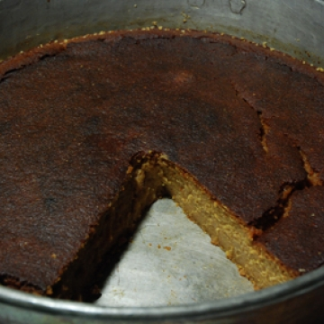
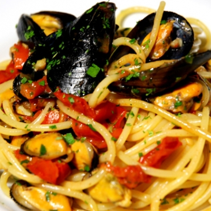
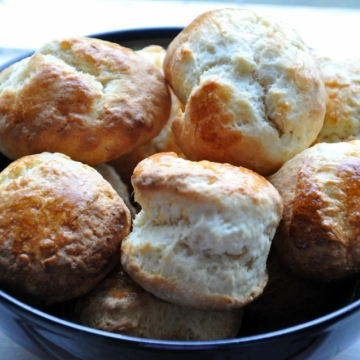

cucino.net
Pizza al formaggio
Stefano
Insalata Estiva 2
Livia
fusilli alle melanzane
Marika
Straccetti alla romana con rucola...
Paolo
Flammkuchen
Rablù
Involtini di manzo e basmati alla...
Rablù
Tortino zucchine e ricotta
Livia
Tartufini di caprino noci e...
Livia
Torta al cacao...light
Marika
Purè di tuberi misti
Lea Madegravis
Doppia crema al cioccolato
Paolo
Melanzana spalmabile
Livia

Torta di Carnevale
Stefano
Pizza arrotolata
Rablù
Biscotti al formaggio
Rablù
Insalata con melograno
Livia
Casatiello
Nina
Tortino alla scarola
Livia
Bolzano apple cake
Livia
Loaf con noci e cioccolato bianco
Marta

Spaghetti con le cozze
Stefano
Pasta zucchine e calamari
Livia
Plumcake con olive, feta e...
Lea Madegravis
Insalata di valeriana e avocado
Rablù
Scorzette di arancia candite al...
Nina
scones
Nina
Ragù alla bolognese
Paolo

Scones
Marta
Linzertorte
Livia
Frittelle di fiori di acacia
Lea Madegravis
La Matriciana
Paolo
Scacciata catanese
Rablù
Insalata con arance, feta e olive
Livia
Sticky lemon chicken
Livia
Apple Crumble
Paola
Insalata spinaci pere e noci
Livia
Biscotti al tè verde Matcha
Lea Madegravis
Purè di fave
Livia
Muffins feta e spinaci
Alessandra
Brownies
Nina
Arista alle prugne
Rablù
La pizza
Paolo
Pan di spagna
Livia
Dolcetto al rosmarino
Paola
Filetto al Porto
Alessandro
Canestrini con ciliegie e cremina...
Rablù
Focaccia alla lavanda
Marika
Crostata a pois con cioccolato e...
Rablù
Polpette di ceci e rape rosse
Rablù
Nidi di uova, cicoria e bufala
Rablù
Biscotti al burro di arachidi
Nina
Torta alle arance
Marta
Dolcetti al cocco
Marta
Piccoli calzoni di ricotta,...
Rablù
Paccheri con carciofi veneziani
Lea Madegravis
Tofu con semi di sesamo e melange...
Lea Madegravis
Tagliolini al nero, con seppie,...
Stefano
Crumble al Rabarbaro
Alessandra
Carrot cake
Nina
Pancakes
Livia
Quiche di zucchine
Livia
Parigine ripiene
Marta
L'uovo di ricotta e miele
Paolo
Risotto al Gavi
Pietro
Il guacamole
Paolo
Cremino al cioccolato
Lea Madegravis
Ravioli ricotta e spinaci
Livia
Parrozzo
Rablù
Los garbanzos de Pinotxo
Stefano
Pasta e ceci
Livia
Insalata primaverile
Lea Madegravis
Le lasagne ai carciofi di nonna...
Paolo
Cookies americani
martaciliegia
Tortine all'olio d'oliva
Livia
Paccheri con scampi, ricotta e...
Diego
Biscotti al sesamo di Palermo
Rablù
Triglie al cartoccio con semi di...
Rablù
torta al cioccolato senza farina
Nina
Pan brioche
Lea Madegravis
Gnudi di ricotta e ortiche
Lea Madegravis
Torta arance e mandorle
Livia
Crostata rustica con marmellata...
Marta
Bicchierino di latte di mandorle...
Lea Madegravis
Biscotti tipo canestrelli
Nina
Involtini di fagiolini e pancetta
Rablù
Tarallini al pepe rosa
Rablù
Coppa ricotta e fragole
Livia
Tortino di alici
Rablù
Torta salata con ricotta di...
Rablù
Merluzzo al forno con finocchi
Paolo
Crema di baccalà con pepe rosso
Lea Madegravis
Vellutata di zucca con crostini...
Stefano
Zucchine alla scapece
Livia
Insalata Estiva 1
Livia
Crostata di arance e mandorle
Lea Madegravis
Faraona all'arancia e miele...
Rablù
Pomodorini confit
Livia
Guinness Chocolate Cake
Marta
Lenticchie verdi di puy in...
Rablù
Clafoutis di fragole e menta
Rablù
Biscotti cuor di nutella
martaciliegia
Pasta all'uovo (impastata a...
Livia
Crema pasticcera
Livia
Salmone Teriyaki
Alessandro
Crema di carote e topinambur con...
Lea Madegravis
Quiche Lorraine
Livia
Tarte tatin di mele
Nina
Linzer Squares
Nina
Vellutata di piselli alla menta...
Lea Madegravis
Paste da latte
Rablù
Spaghetti con le vongole
Paolo
Spritzgeback
Livia
Il pollo in carpione
Paolo
Shortbread
Marta
Cupcakes classici
Nina Roth
Insalata pollo e avocado
Livia
Lingue di gatto
Livia
Cornettini alla marmellata con...
Rablù
Crema di mortadella
Rablù
Ciambelle al vino bianco
Giorgia
Bucatini con alici fresche (...
Rablù
zuppa inglese
Nina
Crema di cavolo broccolo...
Rablù
Bombette al salame e formaggio...
Rablù
Frittata di asparagi e semi di...
Rablù
Il pesto della Chiara
Livia
Il bicchierino di ricotta gelata...
Paolo
El bicerìn
Marta
Ravioli ricotta e pesto al sugo...
Stefano
Risotto con radicchio e taleggio
Livia
Cheeseburger Vegetariano
Livia
Torta di mele
Stefano
Torta al cioccolato gianduia
Marta
Torta rustica con lonza a dadini...
Rablù
Torta con noci e cioccolato
Livia
Muffins feta e spinaci
Alessandra
Scaloppine al latte
enrimo
Salmone al forno con contorno di...
Livia
Berliner Curry-wurst
Rablù
Pasta con gli spinaci
Livia
Torta semplice con marmellata
Nina
Zuccotto con crema e cioccolato
Nina
La pasta all'uovo
Paolo
Insalata autunnale
Livia
Cupcakes al cioccolato
Nina Roth
Insalata di pollo e pompelmo
Paolo
Torta al cioccolato con crema di...
Nina
CHOCOLATE FUDGE CAKE
Nina
Pasticcio di cavolfiore viola e...
Rablù
Muffins ai mirtilli
Alessandra
La torta di mia nonna
Paolo
Dolce ungherese con le susine
Marta
Eggs Benedict
Alessandra
Cheesecake ai frutti di bosco
Nina
Pappardelle ricotta e salsiccia
Livia